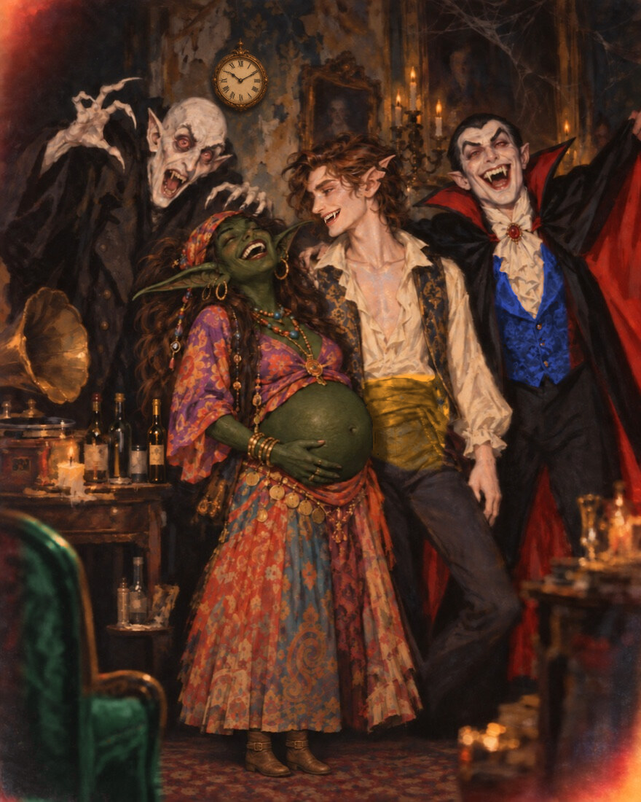
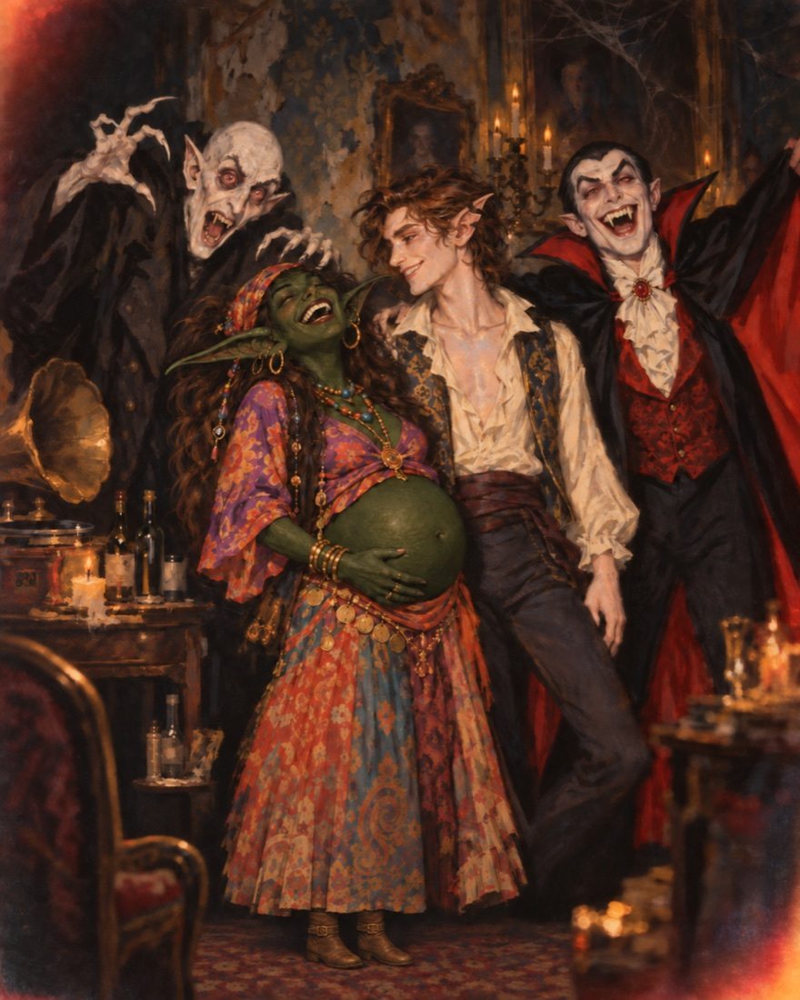

Something in here isn't the way the photograph remembers it.
The party never ended
A record is skipping somewhere. Nobody has moved in a very long time.
Tap to step inside
The moment is whole
The loop settles. The laughter lands. Every frozen face turns toward the room — and waits for a song.
Now the host calls for entertainment. Only Yobo can answer. Run the Performance check at the table — then choose:
The room erupts
The ghosts pour forward — not to menace, to embrace. Glasses raised, the way out thrown open. Whatever he was hiding, they never needed it.
Yobo is Whole: advantage on Performance and enhanced Bardic Inspiration, for the rest of the campaign.
They can tell
The smiles hold a half-second too long. Then the whole room remembers it is dead, and it is not happy to be performed at.
DM